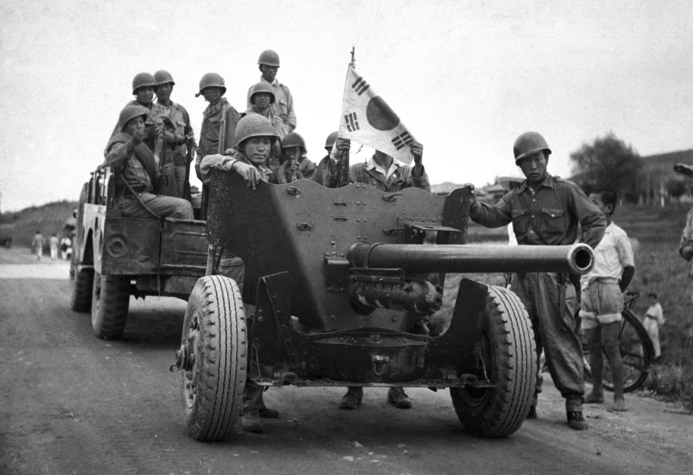

“If the best minds in the world had set out to find us the worst possible location in the world to fight this damnable war,” U.S. Secretary of State Dean Acheson (1893-1971) once said, “the unanimous choice would have been Korea.” The peninsula had landed in America’s lap almost by accident. Since the beginning of the 20th century, Korea had been a part of the Japanese empire, and after World War II it fell to the Americans and the Soviets to decide what should be done with their enemy’s imperial possessions. In August 1945, two young aides at the State Department divided the Korean peninsula in half along the 38th parallel. The Russians occupied the area north of the line and the United States occupied the area to its south.
By the end of the decade, two new states had formed on the peninsula. In the south, the anti-communist dictator Syngman Rhee (1875-1965) enjoyed the reluctant support of the American government; in the north, the communist dictator Kim Il Sung (1912-1994) enjoyed the slightly more enthusiastic support of the Soviets. Neither dictator was content to remain on his side of the 38th parallel, however, and border skirmishes were common. Nearly 10,000 North and South Korean soldiers were killed in battle before the war even began.
Even so, the North Korean invasion came as an alarming surprise to American officials. As far as they were concerned, this was not simply a border dispute between two unstable dictatorships on the other side of the globe. Instead, many feared it was the first step in a communist campaign to take over the world. For this reason, nonintervention was not considered an option by many top decision makers. (In fact, in April 1950, a National Security Council report known as NSC-68 had recommended that the United States use military force to “contain” communist expansionism anywhere it seemed to be occurring, “regardless of the intrinsic strategic or economic value of the lands in question.”)
“If we let Korea down,” President Harry Truman (1884-1972) said, “the Soviet[s] will keep right on going and swallow up one [place] after another.” The fight on the Korean peninsula was a symbol of the global struggle between east and west, good and evil, in the Cold War. As the North Korean army pushed into Seoul, the South Korean capital, the United States readied its troops for a war against communism itself.
At first, the war was a defensive one to get the communists out of South Korea, and it went badly for the Allies. The North Korean army was well-disciplined, well-trained and well-equipped; Rhee’s forces in the South Korean army, by contrast, were frightened, confused and seemed inclined to flee the battlefield at any provocation. Also, it was one of the hottest and driest summers on record, and desperately thirsty American soldiers were often forced to drink water from rice paddies that had been fertilized with human waste. As a result, dangerous intestinal diseases and other illnesses were a constant threat.
By the end of the summer, President Truman and General Douglas MacArthur (1880-1964), the commander in charge of the Asian theater, had decided on a new set of war aims. Now, for the Allies, the Korean War was an offensive one: It was a war to “liberate” the North from the communists.
Initially, this new strategy was a success. The Inch’on Landing, an amphibious assault at Inch’on, pushed the North Koreans out of Seoul and back to their side of the 38th parallel. But as American troops crossed the boundary and headed north toward the Yalu River, the border between North Korea and Communist China, the Chinese started to worry about protecting themselves from what they called “armed aggression against Chinese territory.” Chinese leader Mao Zedong (1893-1976) sent troops to North Korea and warned the United States to keep away from the Yalu boundary unless it wanted full-scale war.
This was something that President Truman and his advisers decidedly did not want: They were sure that such a war would lead to Soviet aggression in Europe, the deployment of atomic weapons and millions of senseless deaths. To General MacArthur, however, anything short of this wider war represented “appeasement,” an unacceptable knuckling under to the communists.
As President Truman looked for a way to prevent war with the Chinese, MacArthur did all he could to provoke it. Finally, in March 1951, he sent a letter to Joseph Martin, a House Republican leader who shared MacArthur’s support for declaring all-out war on China–and who could be counted upon to leak the letter to the press. “There is,” MacArthur wrote, “no substitute for victory” against international communism.
Members swore an oath of poverty, chastity and obedience. They weren’t allowed to drink, gamble or swear. Prayer was essential to their daily life, and the Templars expressed particular adoration for the mother of Jesus, the Virgin Mary.
For Truman, this letter was the last straw. On April 11, the president fired the general for insubordination.
In July 1951, President Truman and his new military commanders started peace talks at Panmunjom. Still, the fighting continued along the 38th parallel as negotiations stalled. Both sides were willing to accept a ceasefire that maintained the 38th parallel boundary, but they could not agree on whether prisoners of war should be forcibly “repatriated.” (The Chinese and the North Koreans said yes; the United States said no.)
Finally, after more than two years of negotiations, the adversaries signed an armistice on July 27, 1953. The agreement allowed the POWs to stay where they liked; drew a new boundary near the 38th parallel that gave South Korea an extra 1,500 square miles of territory; and created a 2-mile-wide “demilitarized zone” that still exists today.
The Korean War was relatively short but exceptionally bloody. Nearly 5 million people died. More than half of these–about 10 percent of Korea’s prewar population–were civilians. (This rate of civilian casualties was higher than World War II’s and the Vietnam War’s.) Almost 40,000 Americans died in action in Korea, and more than 100,000 were wounded. Today, they are remembered at the Korean War Veterans Memorial near the Lincoln Memorial on the National Mall in Washington, D.C., a series of 19 steel statues of servicemen, and the Korean War memorial in Fullerton, California, the first on the West Coast to include the names of the more than 30,000 Americans who died in the war.